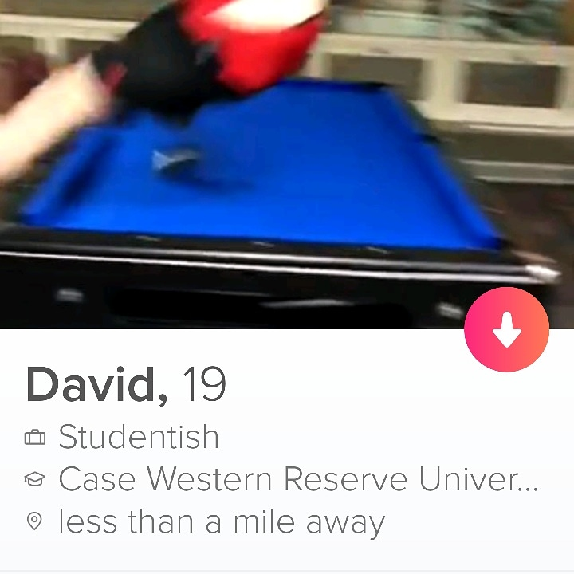

Hi, I'm Dave.
From this class I hope to expand my understanding of how websites work beyond what I bothered learning from Code Academy.I've been in to computers since I was a kid, taking them apart and helping my dad make 1 desktop work by stealing parts from 3 broken ones. I used to not have internet so I just spent my time rifiling through system files and settings.
I will probably go for certifications or a tech program that offers job placement at the end of the course. If that doesn't work out I might go for a bachelors in ComSci.
I'd love to find a few ways to make relatively passive income from either an ecommerce business or some other company that I can have other people manage once it's stable. This would allow me to enjoy more of my time instead of worrying 24/7 about retirement.
My favorite Wiki page right now would have to be Short Squeeze as one is currently happening with Gamestop stock.